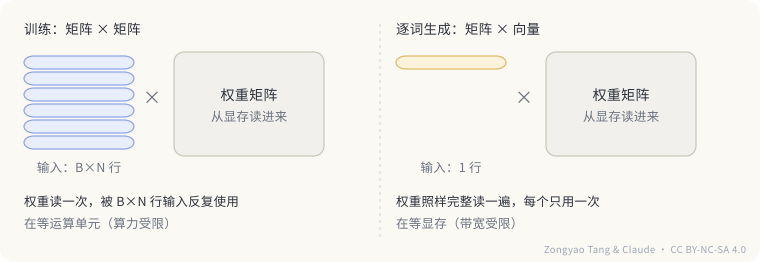
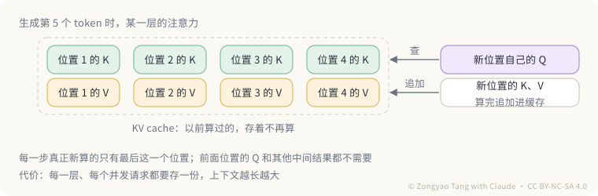

线索是：动手优化之前先立一条规矩，任何时候都要有一个“对的版本”可以比 → 把 Transformer 拆开，算子分成两类，贵的方式不一样 → 同一个矩阵乘法，到了逐词生成时性格完全变了 → 为了不重复计算，引入 KV cache。这一单元是第 4 部分的总览：后面四个单元各攻其中一类。
第 4 部分 · 算子与 kernel4.1 Transformer 的算子拆解
这一单元回答把一个 Transformer 拆成一个个 kernel，它们各是什么？哪些最贵？
承接第 3 部分：用学过的 kernel 知识，把 1.4 的 Transformer 拆成一个个算子来看。
讲解
1先写一个对的，再写一个快的
每个 kernel 先写最朴素、最容易看懂的版本，和 PyTorch 的参考结果逐元素比对：看最大绝对误差和相对误差。之后每做一次优化，都和这个版本再比一次。
性能优化最怕的不是没变快，而是变快的同时悄悄算错了。GPU 上的错误很少会让程序崩溃：数组越界读到的是别的数据，线程之间的竞争让结果偶尔不对，程序照样跑完、给出一个看起来正常的数。
规矩。 每个 kernel 都先写一个最朴素的版本：一个线程算一个输出元素，不做任何技巧，代码短到能一眼看出对不对。再用 PyTorch 的同一个运算作为参照，确认这个朴素版本是对的。之后每做一步优化，都和它（以及 PyTorch）比一次。
怎么比。 浮点运算的结果不能要求逐位相等。3.5 讲过，并行归约改变了加法的顺序，结果在最后几位上会有差别，这是正常的。看两个量：
- 最大绝对误差：
(a - b).abs().max()。 - 最大相对误差：绝对误差除以数值本身的大小。
对 32 位浮点，相对误差在 10⁻⁶ 到 10⁻⁵ 的量级是舍入造成的；到了 10⁻³ 甚至更大，就是 bug。PyTorch 里的
torch.allclose(a, b, rtol=..., atol=...)把这两个判断合在了一起。比什么输入。 不要只用一种形状。至少覆盖：很小的（1 个元素、1 行）、不是块大小整数倍的（边界处理最容易出错）、很大的。输入里放一些特殊值：零、很大的数、负数。
为什么放在这一部分的开头。 后面四个单元讲的全是“怎样改写计算让它更快”：融合、分块、在线 softmax、重算。每一种都改变了运算的顺序或者省掉了中间结果，每一种都可能引入微小的数值差异或者真正的错误。先把验证的办法立住，后面才走得稳。这和 0.2 的“先有基线”是同一条纪律，一个管速度，一个管正确。
打个比方像做账：先保证每一笔都对得上，再想办法记得更快。账错了，记得再快也没用。
所以优化过程中出现的微小差异（比如浮点加法顺序变了，见 3.5）是正常的；误差的数量级不对，才说明有 bug。
出处CUDA for LLMs 第 4 章 与 PyTorch 结果比对- 最大绝对误差：
- 有了验证的办法，可以放心地把 Transformer 拆开看了。
2Transformer 的运算量几乎都在矩阵乘法里，时间却不全是
论计算量，QKV 投影、注意力输出投影和 MLP 这几个矩阵乘法占了绝大部分；但 softmax、LayerNorm、GELU、残差相加这些逐元素和归约算子，几乎不做计算，却要把整个张量读写一遍，是典型的带宽受限。
把 1.4 的一个 Transformer 层按执行顺序列出来，每个算子标上它属于哪一类（用 3.3 的算术强度来判断：每读写一个字节，做了多少次运算）。
算子 做什么 类型 LayerNorm 每个位置减均值、除标准差 带宽受限 Q、K、V 投影 三次矩阵乘法 算力受限 QKᵀ 矩阵乘法，得到 N×N 的分数 算力受限，但输出很大 缩放、掩码、softmax 逐元素加归约 带宽受限，作用在 N×N 上 乘以 V 矩阵乘法 算力受限 输出投影 矩阵乘法 算力受限 残差相加 逐元素 带宽受限 LayerNorm 同上 带宽受限 MLP 第一层 矩阵乘法，维度放大 4 倍 算力受限 GELU 逐元素，作用在 4 倍宽的张量上 带宽受限 MLP 第二层 矩阵乘法 算力受限 残差相加 逐元素 带宽受限 运算量在哪。 一次矩阵乘法里，每个权重都参与乘加，运算次数是巨大的；一次残差相加，每个元素只做一次加法。所以论浮点运算的次数，矩阵乘法占了九成九。1.5 的 6N 估算只数矩阵乘法，就是这个道理。
时间在哪。 时间不只取决于运算次数。带宽受限的算子几乎不做运算，却要把整个张量从显存读一遍、写一遍。一层里有七八个这样的算子，其中 GELU 作用在 4 倍宽的张量上，softmax 那一组作用在 N×N 的张量上。即时执行时每个都是独立的 kernel，各读写一遍。加起来，它们能占到一步时间里相当可观的一部分，而运算量上几乎可以忽略。
于是优化分成两路，后面四个单元各管一段：
- 算力受限的矩阵乘法：用好 Tensor Core 和分块（4.5），用低精度（1.5、2.6）。实际上直接调用库。
- 带宽受限的其余算子：减少读写。相邻的合并（4.2 融合）；注意力里那个 N×N 的中间结果干脆不让它落地（4.4）。
这张表也是读 profiler 输出的参照：看到某个 kernel 排在前面，先对一下它属于哪一类，就知道该往哪个方向想办法。
打个比方像一家工厂：真正加工产品的机床只有几台，却有一大堆搬运、贴标签的工序，每道工序都要把货从仓库拿出来再放回去。
所以优化分两路：矩阵乘法靠 Tensor Core 和分块（4.5）；其余算子靠减少读写，也就是融合（4.2）和像 Flash Attention 那样不落地（4.4）。
后面会用到 哪些能融合：一串逐元素的运算，加上它们后面的归约出处CUDA for LLMs 第 5 章 推理用的朴素 kernel- 上面说矩阵乘法是算力受限的。这句话在训练时成立，到了逐词生成时却不成立了。
3生成一个词时，矩阵乘法退化成了矩阵乘向量
逐词生成时每次只处理一个新 token，每层的矩阵乘法变成“矩阵 × 向量”：整个权重矩阵从显存读一遍，每个权重只用一次。算术强度大约只有 1 FLOP/B，完全被显存带宽卡住。
训练时。 一个 batch 有 B 个序列，每个序列 N 个位置，全部同时计算。线性层的运算是“(B×N) 行的矩阵 × 权重矩阵”。权重矩阵从显存读进来一次，被 B×N 行输入反复使用。每读一个权重，做了 B×N 次乘加。算术强度很高，瓶颈在运算单元。
逐词生成时。 1.4 讲过，生成是一个 token 一个 token 来的。每一步只有一个新位置要算。同一个线性层，现在的运算是“1 行 × 权重矩阵”，也就是矩阵乘向量。权重矩阵照样要从显存完整地读一遍，但每个权重只做了 1 次乘加，就再也用不上了，直到下一个 token。

同一个权重矩阵，训练时被用很多次，生成时每个权重只用一次 算术强度从“每字节成百上千次运算”掉到“每字节不到一次运算”。运算单元几乎是闲着的，时间全花在把权重从显存搬出来上。
由此得到一个很简单的估算。 生成一个 token，要把模型的全部权重读一遍。所以
每秒最多生成的 token 数 ≈ 显存带宽 ÷ 模型权重的总字节数
7B 参数的模型用 16 位存是 14 GB。显存带宽约 1 TB/s 的卡上，每秒最多 70 个左右。实际会更低，因为还有 KV cache 的读写和别的开销。
这个估算指出了两条提速的路。
- 让分母变小：用更少的位数存权重。4 位量化后分母是原来的四分之一（9.2）。
- 让每次读权重“多干点活”：把多个用户的请求放在一起，读一遍权重同时为 B 个请求各算一个 token，回到矩阵乘矩阵（9.1 的批处理）。
同一个算子，两种性格。 这是 0.1 里“先问它在等什么”的一个好例子。同样是
nn.Linear，训练时在等运算单元，推理时在等显存。所以训练和推理要的硬件特性、适用的优化手段都不一样。打个比方像为了做一道菜，把整个仓库的原料都搬出来过一遍，只取其中一小撮。
所以单用户的生成速度上限约等于“显存带宽 ÷ 模型的字节数”：7B 模型用 fp16 约 14 GB，在 1 TB/s 的卡上每秒最多七十来个 token。量化（9.2）和批处理（9.1）都是在对付这件事。
出处CUDA for LLMs 第 5 章 矩阵乘法变成矩阵乘向量- 逐词生成还有一个更明显的浪费。
4KV cache：算过的不再算
生成第 t 个词时，前面所有词的 K 和 V 在上一步已经算过了。把它们存起来，每一步只为新词算一次 Q、K、V，再和缓存里的 K、V 做注意力。
不用缓存时。 生成第 t 个 token，最朴素的做法是把前面全部 t−1 个 token 重新送进模型算一遍。生成 1000 个 token，就要算 1 + 2 + … + 1000 次“位置”，约 50 万次。计算量随长度的平方增长。
哪些是重复的。 因果掩码（1.4）保证了一个位置的计算只依赖它前面的位置。所以第 5 个位置在每一层的中间结果，不会因为后面又生成了第 6、第 7 个 token 而改变。每一步真正新的只有最后那一个位置。
新位置需要前面位置的什么。 在每一层的注意力里，新位置用自己的 Q，去和所有前面位置的 K 算分数，再对它们的 V 加权求和。它只需要前面位置的 K 和 V，不需要它们的 Q，也不需要它们的其他中间结果。

新位置拿自己的 Q 去查缓存里的 K、V KV cache。 每一层都把已经算过的 K 和 V 存下来。每生成一个新 token：
- 只把这一个 token 送进模型。
- 在每一层，算出它的 Q、K、V；把 K、V 追加到这一层的缓存里；用它的 Q 和缓存里全部的 K、V 做注意力。
每一步的计算量从“和当前长度成正比”降到“只算一个位置”（注意力那一步仍然要看全部缓存，但那只是一次矩阵乘向量）。生成 1000 个 token 的总计算量从约 50 万次位置降到 1000 次。
代价是显存。 每个请求的缓存大小 = 2（K 和 V）× 层数 × 序列长度 × 隐藏维度 × 每个数的字节数。一个 32 层、隐藏维度 4096 的模型，16 位存储，每个 token 占 2 × 32 × 4096 × 2 字节 ≈ 0.5 MB。上下文 8000 个 token 就是 4 GB，而且每个并发的请求各要一份。
所以推理服务里，一张卡能同时服务多少请求，往往不是由算力决定的，而是由 KV cache 放不放得下决定的。9.1 和 9.3 讲的显存管理，管的主要就是它。
这是 0.1 的两个思想同时出现：把算过的结果留在手边反复用，以及它的反面，用存储换计算。
打个比方像写长篇小说时随手做的人物笔记：写新章节时翻笔记就行，不用把前文从头再读一遍。
所以每生成一个词的计算量从“随长度平方增长”降到“随长度线性增长”，代价是显存：KV cache 随序列长度和并发数一起变大（9.1）。
承接 注意力是一次“软查表”出处CUDA for LLMs 第 5 章 KV cache
串起来
优化前先有对的版本，每改一步都和它比。Transformer 的算子分两类：矩阵乘法占了运算量，受算力限制；归一化、激活、softmax 几乎不做运算，受带宽限制。逐词生成时矩阵乘法退化成矩阵乘向量，也变成带宽受限。KV cache 用显存换掉了重复的计算。
考考自己
不看讲解，用自己的话讲一遍。
- 优化 kernel 时为什么要先保留一个朴素的正确版本？怎样判断一个优化后的版本“算对了”？
- Transformer 一层里有哪些算子？哪些受算力限制，哪些受带宽限制？
- 为什么逐词生成时的矩阵乘法是带宽受限的？单用户的生成速度上限怎么估算？
- KV cache 缓存的是什么？它把生成的计算量从什么降到了什么？代价是什么？
术语
- numerical verification
- 数值验证
- inference
- 推理
- memory-bound
- 带宽受限
- compute-bound
- 算力受限